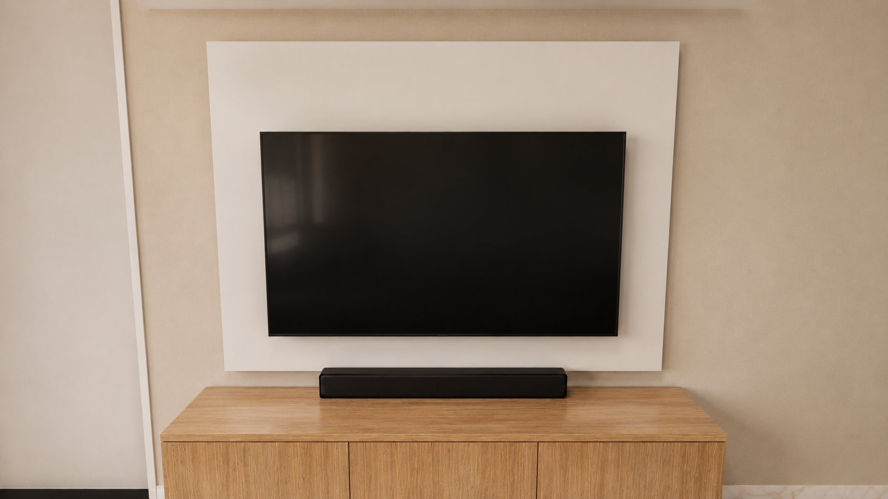
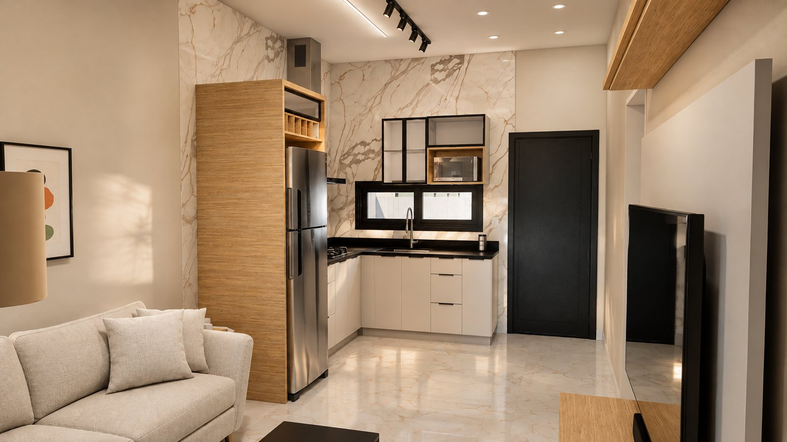
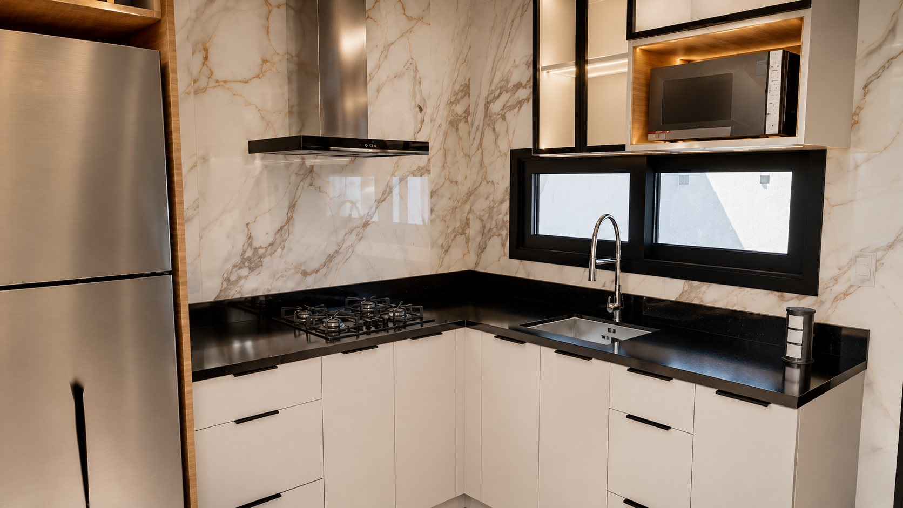
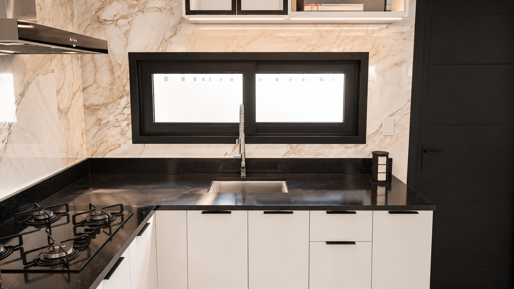

Sala e cozinha
sala 10,13 m² · cozinha 8,10 m²A sala e a cozinha são integradas, com uma porta de correr que dá acesso à circulação dos quartos. Nas imagens, a cozinha planejada em L apresenta bancada escura e parede revestida em porcelanato calacata.
- Painel de TV off-white sobre rack de madeira clara
- Cozinha em L com armários brancos e torre de madeira
- Porta de correr de 1,00 m entre a sala e a circulação dos quartos